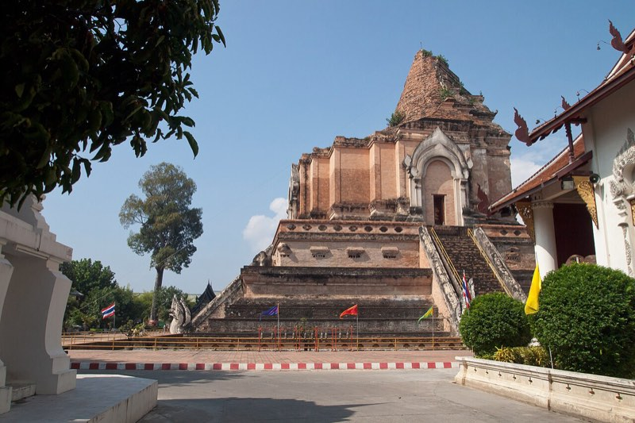
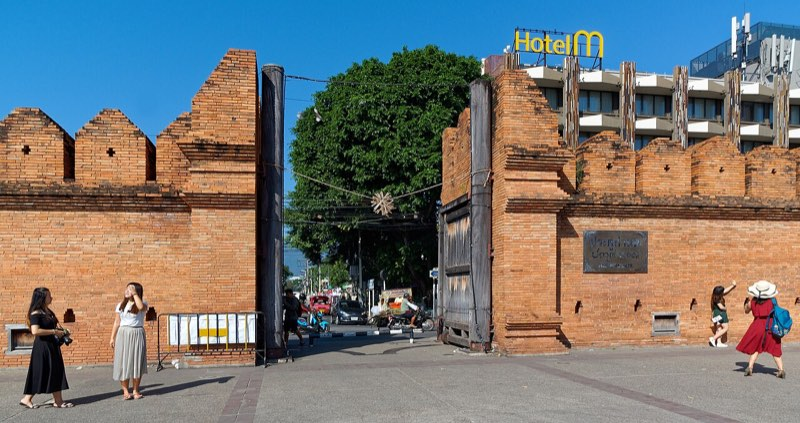
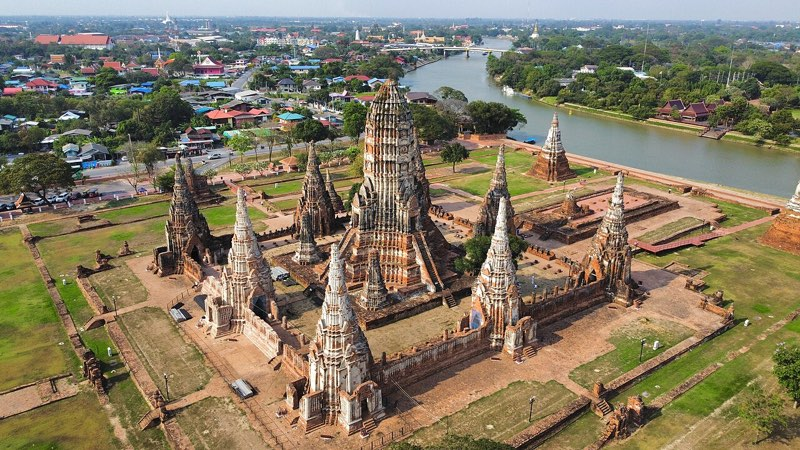
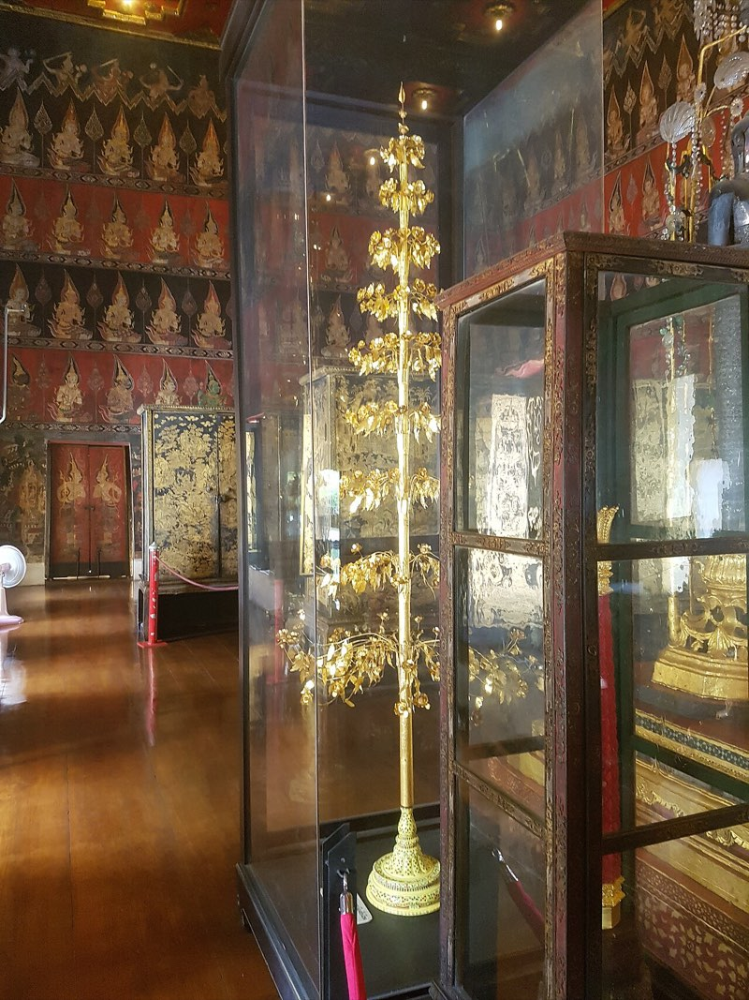
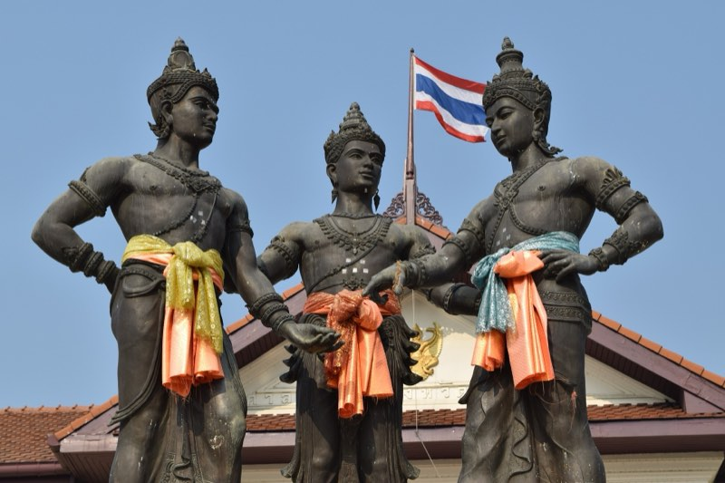

the circle kings
before maps, a kingdom wasn't a shape. it was an aura.
mandala = circle
mandala is an old word from india. it means circle.
a holy middle, rings going out from it.
old kings in asia ran their countries in that shape. draw one. it copies itself all the way around.

your neighbor is your opp
kautilya wrote this down in india like 2,000 years ago.
the kingdom next door wants your land: opp. the one past them has the same beef with your neighbor: friend.
tap any kingdom to make it the main character.
aura, not borders
a kingdom was like wifi. full bars near the router, nothing by the mailbox.
walk far enough and the next king's signal is stronger.
kings fought over people, not land. land was everywhere. people were rare.
some towns sat between two signals and paid both kings. in thai that's a town under two skies.
drag a king. tap him to boost his aura.

kings inside kings
big kings had little kings. little kings had littler ones, down to the village head man.
same shape at every size. tap a small one to go inside.
gifts up, protection down
little kings sent big kings rice, elephants and soldiers. that's tribute.
malay sultans sent siam a tree of gold and a tree of silver every three years. so did chiang mai.
the big king sent back a title and the message: touch them and you deal with me.
your turn. two kings, ten baskets a year. don't get cooked.
.jpg){kind=link}
when the king dies, it wobbles
the aura came from the guy, not the throne.
when a strong king died, his little kings looked around. some stayed. some left.
_1848_by_Sidney_Morse.jpg){kind=link}
then came the maps
1800s: the british and the french show up with rulers and ink.
siam drew borders fast so nobody would take more.
bangkok named its new provinces monthon. literally the same word as mandala.
chiang mai had lords for 600 years (not six-seven). the last one died in 1939.

backwards compatible
today north thailand has provinces, districts and elections.
but ask a grandma who to see when the ditch floods. the head man, then the kamnan, then the big house in town. thai people call it ban yai.
the old circles still run under the new map. old game, new console.
tap a village.
who people go seepaperwork
go see one irl








.jpg){kind=link}


words
- mandala
- circle.
- mueang
- a town and the land around it.
- chao
- lord.
- tribute
- gifts from a small king to a big one.
- kamnan
- head of a few villages.
- ban yai
- big house: the family everyone goes to.
sources
- Kautilya, Arthashastra, Book 6, the circle of kings (rajamandala), translated by R. Shamasastry (1915): Book 6. Dating: Patrick Olivelle, King, Governance, and Law in Ancient India (Oxford, 2013).
- O. W. Wolters, "Ayudhyā and the Rearward Part of the World", Journal of the Royal Asiatic Society (1968), pp. 166–178, and History, Culture, and Region in Southeast Asian Perspectives (ISEAS, 1982; revised 1999). He brought Kautilya's word into Southeast Asian history.
- S. J. Tambiah, World Conqueror and World Renouncer (Cambridge University Press, 1976), chapter 7, The Galactic Polity.
- Sunait Chutintaranond, "Mandala, Segmentary State and Politics of Centralization in Medieval Ayudhya", Journal of the Siam Society 78(1) (1990): PDF
- Thongchai Winichakul, Siam Mapped: A History of the Geo-Body of a Nation (University of Hawai'i Press, 1994). Thai edition: กำเนิดสยามจากแผนที่.
- Volker Grabowsky, The Northern Tai Polity of Lan Na, ARI Working Paper 17 (2004): PDF
- Apiradee Techasiriwan, Tai Lü Manuscripts from Southern Yunnan and Northern Laos (PhD, Hamburg, 2019), p. 26, a polity with two overlords, เมืองสองฝ่ายฟ้า: PDF
- รัตนาพร เศรษฐกุล, การเมืองข้ามฝั่งโขง: ความสัมพันธ์ระหว่างน่านกับสิบสองปันนา, วารสารวิจิตรศิลป์ 6(1), 2558: article
- เพ็ญสุภา สุขคตะ, มติชนสุดสัปดาห์, 26 พ.ย. 2566, on the city navel and the Inthakhin pillar: column
- Tej Bunnag, The Provincial Administration of Siam, 1892–1915 (Oxford University Press, 1977). The monthon, headmen and kamnan.
- Christopher Paik and Jessica Vechbanyongratana, "Path to Centralization and Development: Evidence from Siam", World Politics 71(2) (2019). Chiang Mai fully run from Bangkok by 1915.
- Paul Chambers and Watcharapol Supajakwattana, "The Impact of 'Baan Yai' on Thai Politics", ISEAS Perspective 2025/28: PDF
- Andrew Walker, Thailand's Political Peasants: Power in the Modern Rural Economy (University of Wisconsin Press, 2012). A village in Chiang Mai province.
- Bunga mas: Muzium Negara · Wikipedia. Chiang Mai's gold and silver trees: Nakhon Chiang Mai, 1775–1899
- Wikipedia: Mandala (political model) · Lan Na · Monthon · Inthakhin pillar · Sand mandala · Maratha Confederacy
- Map outlines: Natural Earth, public domain. Kingdom dates on the years map are rounded.
- Photographs: Wikimedia Commons, credited on each picture.